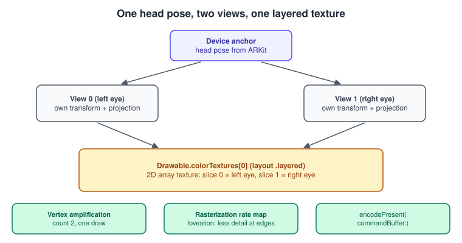
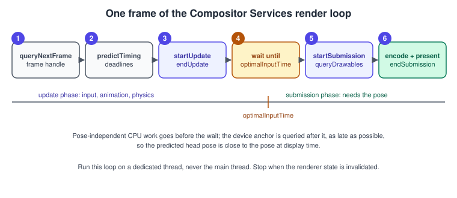
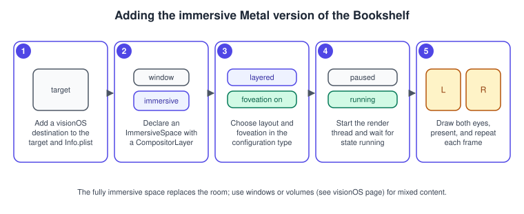

Metal on visionOS
|
This content was generated with the assistance of AI and should be verified against the official documentation before being relied on in production. |
Apple Vision Pro shows a different image to each eye, tracks the head continuously and expects a new pair of images on time, every time. SwiftUI and RealityKit hide all of that. If you want your own Metal renderer in that space (a game engine, a visualisation, a port), you use Compositor Services, which hands your code Metal textures for both eyes, the timing of the frame and the pose of the head, and takes the finished images back for the system to composite.
This page is about that framework only. The app model around it (windows, volumes, the Shared Space and the Full Space, ornaments, gaze and hand input at the SwiftUI level) is covered in visionOS: Windows, Volumes, Immersive Spaces and RealityKit, and ARKit tracking and anchors in Augmented Reality with ARKit and RealityKit. For the concepts of mixed reality and the device landscape, see Augmented and Mixed Reality Basics.
The facts were checked in November 2026. The framework documented is Compositor Services, which is available on visionOS 1.0
and later and, in the current documentation, on macOS 26 and later; individual members carry later availability, which this page
states where it matters (for example computeProjection from visionOS 2, queryDrawables and tracking areas from visionOS 26).
The code is Swift 6.4 built with Xcode 27 and runs on Apple Vision Pro and, with the limits described below, in the visionOS
Simulator. The renderer in this page uses the long-established Metal 3 interfaces; the layer also reports whether it supports Metal 4.
In the running example this is the last stage: the Sort the shelf game of the other pages gets an immersive version in which the books float in front of the player. The page builds its first step, a row of nine books drawn in stereo.
When Compositor Services is the right tool
| You want | Use |
|---|---|
Windows with SwiftUI controls, possibly with 3D content |
SwiftUI; see the visionOS page. |
3D content, physics and system lighting without writing a renderer |
RealityKit in a volume or an immersive space. |
Your own Metal renderer that draws everything in a fully immersive space |
Compositor Services, this page. |
Your own Metal renderer in a window on a Mac or iPad |
|
If you do not render with Metal, you do not need Compositor Services. When you do, the whole space is yours: the system
ignores style modifiers on an immersive space whose content is a CompositorLayer and treats it as fully immersive, so there is
no mixed or progressive style to configure.
Two views, one pose

Every frame the layer gives you a drawable. It contains:
-
views: oneLayerRenderer.Drawable.Viewper viewpoint, two on Vision Pro. A view has atransform, the matrix that converts between the device’s coordinate space and the position of the view in that space (the offset of the eye from the head), and atextureMapthat says where the view lives in the textures. -
colorTexturesanddepthTextures: the textures to render into. -
rasterizationRateMaps: the foveation maps, when foveation is enabled. -
deviceAnchor: the head pose that the frame was rendered for, which you set. -
frameTiming,depthRange,targetandstate: timing, the near and far distances in metres, where the drawable will be shown, and its ownership state.
You build, for each view, a projection matrix (computeProjection(convention:viewIndex:), visionOS 2 and later, with the default
convention .rightUpBack) and a view matrix from the device anchor and the view’s transform. Both eyes' images are then rendered
into the textures described by the layout.
Setting up the immersive space
The entry point is an ImmersiveSpace whose content is a CompositorLayer. The closure receives the LayerRenderer; start your
render loop on a dedicated thread, never the main thread.
import SwiftUI
import CompositorServices
@main
struct BookshelfApp: App {
var body: some Scene {
WindowGroup {
LauncherView()
}
// Do not add immersion style modifiers here: they are ignored for a CompositorLayer.
ImmersiveSpace(id: "shelf") {
CompositorLayer(configuration: BookshelfConfiguration()) { layerRenderer in
let renderer = ShelfRenderer(layerRenderer)
let thread = Thread { renderer.run() }
thread.name = "Render Thread"
thread.qualityOfService = .userInteractive
thread.start()
}
}
}
}
struct LauncherView: View {
@Environment(\.openImmersiveSpace) private var openImmersiveSpace
@State private var isOpen = false
var body: some View {
Button("Enter the shelf") {
Task {
if case .opened = await openImmersiveSpace(id: "shelf") { isOpen = true }
}
}
.disabled(isOpen)
}
}An app can also start in the immersive space by setting UIApplicationPreferredDefaultSceneSessionRole to
CPSceneSessionRoleImmersiveSpaceApplication in the scene manifest of Info.plist, but Apple’s article recommends starting
with a window instead, so that the person chooses to enter.
The configuration
If you pass no configuration, DefaultCompositorLayerConfiguration supplies defaults. To change them, adopt
CompositorLayerConfiguration and implement makeConfiguration(capabilities:configuration:): the system passes the defaults
for the current device in as an inout LayerRenderer.Configuration, and you change only what you need, validating each choice
against the capabilities. The Simulator may not support every option, which is another reason to check the capabilities.
import CompositorServices
struct BookshelfConfiguration: CompositorLayerConfiguration {
func makeConfiguration(capabilities: LayerRenderer.Capabilities,
configuration: inout LayerRenderer.Configuration) {
// Foveation lowers the resolution in the periphery. Ask for layouts that support it.
let supportsFoveation = capabilities.supportsFoveation
let layouts = capabilities.supportedLayouts(options: supportsFoveation ? [.foveationEnabled] : [])
// One texture array, one render pass for both eyes, when the device offers it.
configuration.layout = layouts.contains(.layered) ? .layered : .dedicated
configuration.isFoveationEnabled = supportsFoveation
// 16-bit float colour for HDR content. The display uses the P3 colour space.
configuration.colorFormat = .rgba16Float
}
}Source: CompositorLayerConfiguration
The properties of LayerRenderer.Configuration:
| Property | Meaning |
|---|---|
|
How views map to textures: |
|
Pixel format and texture usage of the colour textures. |
|
The same for the depth textures. |
|
The distances to the far and near clipping planes. |
|
Whether the layer uses variable rasterization rates. |
|
Whether the drawable also provides maps flipped around the y axis. |
|
The maximum quality the layer may use when drawing to the drawables; the capabilities report the default. |
|
Format of the stencil texture in the drawable’s render context, and the multisample count used for rendering. |
|
Whether the layer supports Metal 4. When false, Metal 3 is assumed, as in the code of this page. |
|
Format and usage of the textures that record tracking areas for hover effects. |
Layouts
| Layout | Meaning | How you render |
|---|---|---|
|
Each view is a slice of one |
One render pass; set |
|
Each view has its own texture. |
One render pass per view, each with its own pass descriptor. |
|
One texture stores all views. |
A setup similar to layered; each view’s |
Choose .layered when the capabilities include it and fall back to .dedicated. The layered path is the cheaper one: one
pass, one set of draw calls, with the GPU replicating each triangle to both slices.
The renderer states
LayerRenderer.state has three values, and the render loop is a loop over them.
While the state is paused, call waitUntilRunning(): the system may pause the scene while it confirms that the person
wants to enter, and nothing should be drawn. While running, render the next frame. When invalidated, leave the loop and
release everything. Do all expensive setup (shader libraries, pipeline states, textures, the ARKit session) before the first
frame, because creating a pipeline in the loop causes a visible hitch in a headset.
The frame loop

Compositor Services splits a frame into an update phase and a submission phase, and wants to be told when each starts and ends:
-
queryNextFrame()returns the nextLayerRenderer.Frame, or nil. -
predictTiming()returns the predictedLayerRenderer.Frame.Timing:optimalInputTime(when to start submission),renderingDeadline(when all work must be finished),presentationTime(when the frame is displayed) andtrackableAnchorTime. -
startUpdate(), then input handling, animation and anything that does not depend on the head pose, thenendUpdate(). -
Wait until the optimal input time with
LayerRenderer.Clock().wait(until:tolerance:). -
startSubmission(), thenqueryDrawables(). It usually returns one drawable (two during a Reality Composer Pro capture); an empty array means the frame is invalid (the layer is paused or invalidated).queryDrawable()is deprecated. -
For each drawable: set the device anchor, encode the commands that depend on the pose, call
encodePresent(commandBuffer:)and commit the command buffer. -
endSubmission().
Rendering one frame at a time matters: the layer manages a finite number of frames, so do not start the next until the current one is submitted. Use the update and submission calls even if you think you do not need them, because the system uses the timings you report to improve its predictions and to manage CPU and GPU resources. Retrieve the drawable as late as possible, because the system recycles drawables and an early one may not be ready.
The device anchor and ARKit
The camera of a head-mounted display must follow the head. If the pose you render with differs from the pose the head has when
the frame is shown, the world seems to swim, and that is a comfort problem. The pose comes from ARKit’s WorldTrackingProvider,
queried for the time the frame will be displayed:
-
Run an
ARKitSessionwith aWorldTrackingProviderbefore the loop starts. -
After the wait, query
queryDeviceAnchor(atTimestamp:)with the drawable’sframeTiming.presentationTime, converted to seconds. -
Assign the result to
drawable.deviceAnchor. At display time Compositor Services compares the predicted anchor with the actual hardware pose and shifts the frame’s pixels to match. SettingdeviceAnchorto nil switches that correction off.
A complete immersive renderer
The code below draws nine books as boxes in front of the player. It is the whole renderer: the engine class with the loop,
the pipeline, the pose query and the encoding, followed by the MSL file. Add the .metal file to the visionOS target. The
renderer handles the paused, running and invalidated states and the three frame phases described above.
import ARKit
import CompositorServices
import Metal
import simd
import SwiftUI
final class ShelfRenderer: @unchecked Sendable {
private let layerRenderer: LayerRenderer
private let device: MTLDevice
private let queue: MTLCommandQueue
private let pipeline: MTLRenderPipelineState
private let depthState: MTLDepthStencilState
private let session = ARKitSession()
private let worldTracking = WorldTrackingProvider()
private let modelBuffer: MTLBuffer // 9 model matrices
private let viewBuffer: MTLBuffer // 2 view-projection matrices
// Spatial events arrive on the main thread; the render thread drains them.
private let eventLock = NSLock()
private var pendingEvents: [SpatialEventCollection.Event] = []
init(_ layerRenderer: LayerRenderer) {
self.layerRenderer = layerRenderer
device = layerRenderer.device
queue = device.makeCommandQueue()!
let library = device.makeDefaultLibrary()!
let descriptor = MTLRenderPipelineDescriptor()
descriptor.vertexFunction = library.makeFunction(name: "shelf_vertex")
descriptor.fragmentFunction = library.makeFunction(name: "shelf_fragment")
descriptor.colorAttachments[0].pixelFormat = layerRenderer.configuration.colorFormat
descriptor.depthAttachmentPixelFormat = layerRenderer.configuration.depthFormat
descriptor.maxVertexAmplificationCount = 2 // both eyes from one draw
pipeline = try! device.makeRenderPipelineState(descriptor: descriptor)
let depth = MTLDepthStencilDescriptor()
depth.depthCompareFunction = .greater // reversed depth: near is 1.0
depth.isDepthWriteEnabled = true
depthState = device.makeDepthStencilState(descriptor: depth)!
// Nine books in a row, 1.2 m above the floor, 1 m in front of the origin.
var models: [simd_float4x4] = []
for i in 0..<9 {
var m = matrix_identity_float4x4
m.columns.0.x = 0.05 // width
m.columns.1.y = 0.22 // height
m.columns.2.z = 0.16 // depth
m.columns.3 = SIMD4<Float>(Float(i - 4) * 0.07, 1.2, -1.0, 1)
models.append(m)
}
modelBuffer = device.makeBuffer(bytes: models,
length: models.count * MemoryLayout<simd_float4x4>.stride,
options: .storageModeShared)!
viewBuffer = device.makeBuffer(length: 2 * MemoryLayout<simd_float4x4>.stride,
options: .storageModeShared)!
layerRenderer.onSpatialEvent = { [weak self] events in
guard let self else { return }
self.eventLock.withLock { self.pendingEvents.append(contentsOf: events) }
}
}
// MARK: Loop
func run() {
Task { try? await session.run([worldTracking]) }
while true {
switch layerRenderer.state {
case .paused:
layerRenderer.waitUntilRunning()
case .running:
autoreleasepool { renderFrame() }
case .invalidated:
return
@unknown default:
return
}
}
}
private func renderFrame() {
guard let frame = layerRenderer.queryNextFrame() else { return }
guard let timing = frame.predictTiming() else { return }
// Update phase: everything that does not depend on the head pose.
frame.startUpdate()
let events = eventLock.withLock { () -> [SpatialEventCollection.Event] in
defer { pendingEvents.removeAll() }
return pendingEvents
}
_ = events // pick a book here
frame.endUpdate()
// Wait for the best moment to start, so the predicted pose is fresh.
LayerRenderer.Clock().wait(until: timing.optimalInputTime, tolerance: nil)
frame.startSubmission()
let drawables = frame.queryDrawables()
guard !drawables.isEmpty else { return } // paused or invalidated: nothing to submit
for drawable in drawables { encode(drawable) }
frame.endSubmission()
}
// MARK: Encoding
private static func seconds(from instant: LayerRenderer.Clock.Instant) -> TimeInterval {
let d = LayerRenderer.Clock.Instant.epoch.duration(to: instant)
return TimeInterval(d.components.seconds) + TimeInterval(d.components.attoseconds) * 1e-18
}
private func encode(_ drawable: LayerRenderer.Drawable) {
// 1. Head pose for the time this frame will be shown.
let anchor = worldTracking.queryDeviceAnchor(atTimestamp:
Self.seconds(from: drawable.frameTiming.presentationTime))
drawable.deviceAnchor = anchor
let head = anchor?.originFromAnchorTransform ?? matrix_identity_float4x4
// 2. One view-projection matrix per eye.
let viewCount = drawable.views.count
let matrices = viewBuffer.contents().bindMemory(to: simd_float4x4.self, capacity: 2)
for i in 0..<viewCount {
let projection = drawable.computeProjection(viewIndex: i)
let eyeToWorld = head * drawable.views[i].transform
matrices[i] = projection * eyeToWorld.inverse
}
// 3. A new pass descriptor every frame: the textures change.
let pass = MTLRenderPassDescriptor()
pass.colorAttachments[0].texture = drawable.colorTextures[0]
pass.colorAttachments[0].loadAction = .clear
pass.colorAttachments[0].clearColor = MTLClearColor(red: 0, green: 0, blue: 0, alpha: 0)
pass.colorAttachments[0].storeAction = .store
pass.depthAttachment.texture = drawable.depthTextures[0]
pass.depthAttachment.loadAction = .clear
pass.depthAttachment.clearDepth = 0.0 // reversed depth
pass.depthAttachment.storeAction = .store
pass.renderTargetArrayLength = viewCount // layered layout: one slice per view
pass.rasterizationRateMap = drawable.rasterizationRateMaps.first
guard let commandBuffer = queue.makeCommandBuffer(),
let encoder = commandBuffer.makeRenderCommandEncoder(descriptor: pass) else { return }
// With foveation the viewport is in logical (screen) coordinates, not texture pixels.
let texture = drawable.colorTextures[0]
let screen = drawable.rasterizationRateMaps.first?.screenSize
?? MTLSize(width: texture.width, height: texture.height, depth: 1)
encoder.setViewport(MTLViewport(originX: 0, originY: 0,
width: Double(screen.width), height: Double(screen.height),
znear: 0, zfar: 1))
encoder.setRenderPipelineState(pipeline)
encoder.setDepthStencilState(depthState)
encoder.setCullMode(.none) // keep the example independent of winding
// One draw, replicated to each eye's slice of the layered texture.
let mappings = (0..<viewCount).map {
MTLVertexAmplificationViewMapping(viewportArrayIndexOffset: 0,
renderTargetArrayIndexOffset: UInt32($0))
}
encoder.setVertexAmplificationCount(viewCount, viewMappings: mappings)
encoder.setVertexBuffer(modelBuffer, offset: 0, index: 0)
encoder.setVertexBuffer(viewBuffer, offset: 0, index: 1)
encoder.drawPrimitives(type: .triangle, vertexStart: 0, vertexCount: 36, instanceCount: 9)
encoder.endEncoding()
// 4. Tell Compositor Services when the frame is ready, then submit.
drawable.encodePresent(commandBuffer: commandBuffer)
commandBuffer.commit()
}
}// Shelf.metal
#include <metal_stdlib>
using namespace metal;
struct VertexOut {
float4 position [[position]];
float3 normal;
uint book;
};
// A unit box from 8 corners and 36 indices, so no vertex buffer is needed.
constant float3 corners[8] = {
float3(-0.5, -0.5, -0.5), float3( 0.5, -0.5, -0.5), float3( 0.5, 0.5, -0.5), float3(-0.5, 0.5, -0.5),
float3(-0.5, -0.5, 0.5), float3( 0.5, -0.5, 0.5), float3( 0.5, 0.5, 0.5), float3(-0.5, 0.5, 0.5)
};
constant ushort boxIndices[36] = {
4, 5, 6, 4, 6, 7, // +z
1, 0, 3, 1, 3, 2, // -z
5, 1, 2, 5, 2, 6, // +x
0, 4, 7, 0, 7, 3, // -x
7, 6, 2, 7, 2, 3, // +y
0, 1, 5, 0, 5, 4 // -y
};
vertex VertexOut shelf_vertex(uint vid [[vertex_id]],
uint iid [[instance_id]],
uint view [[amplification_id]],
constant float4x4 *models [[buffer(0)]],
constant float4x4 *viewProjection [[buffer(1)]])
{
float3 p = corners[boxIndices[vid]];
float4 world = models[iid] * float4(p, 1.0);
VertexOut out;
out.position = viewProjection[view] * world;
out.normal = normalize(p); // good enough for a flat-shaded box
out.book = iid;
return out;
}
fragment half4 shelf_fragment(VertexOut in [[stage_in]])
{
// A different colour per book, lit by a fixed light from above.
half3 base = half3(0.5h + 0.5h * sin(half(in.book) * 1.7h + half3(0.0h, 2.0h, 4.0h)));
half light = half(0.35 + 0.65 * saturate(dot(in.normal, normalize(float3(0.3, 1.0, 0.5)))));
return half4(base * light, 1.0h);
}Notes on the code:
-
Depth convention. Apple’s article builds the projection for Compositor Services with reversed depth (near plane at 1.0, far plane at 0.0), so the depth buffer is cleared to 0.0 and the depth test is
.greater. If you change the projection helper, change the clear value and the compare function with it; a frame capture shows the depth values. -
Vertex amplification.
maxVertexAmplificationCounton the pipeline andsetVertexAmplificationCount(_:viewMappings:)on the encoder (available from visionOS 1.0) replay each vertex once per view; the shader reads the view index through the[[amplification_id]]attribute and the mapping’srenderTargetArrayIndexOffsetsends each copy to its own slice. The alternative is to draw twice instanced and write[[render_target_array_index]]yourself. -
Pass descriptor every frame. The textures differ per frame, so never cache the descriptor.
-
Matrices.
computeProjection(viewIndex:)already returns a perspective projection for the view; the view matrix is the inverse of the head pose times the view’s transform. -
Metal 4. To use
MTL4command buffers setconfiguration.supportsMTL4; the drawable then offersencodePresent()without the command buffer argument and the layer exposes acommandQueue. The rest of the loop is unchanged.
Foveation
The eye sees sharply only in a small region. With foveation enabled, the drawable carries a MTLRasterizationRateMap in
rasterizationRateMaps, which assigns a lower sampling rate to the periphery, so the textures are smaller than the logical
screen and the GPU shades fewer fragments. The map is attached to the pass (pass.rasterizationRateMap); the viewport and any
screen-space maths then use the logical size (screenSize of the map), not the texture size. Effects that read the scene
back, such as screen-space ambient occlusion or bloom, must convert between logical and physical coordinates with the map, or
they produce blocky or shifted results. When capabilities.supportsFoveation is false, the
drawable has no maps and the code above falls back to the texture size. Foveation is the first optimisation to turn on for a
fill-rate-limited scene; see Performance Best Practices.
Input: spatial events and hover effects
A Metal-rendered space has no SwiftUI views, so input does not come through gestures on views. There are two routes:
-
layerRenderer.onSpatialEventdelivers a collection of spatial events for direct and indirect touches (a pinch while looking at something). The closure runs on the main thread, so keep it short, and lock whatever your render thread reads, as the code above does with a lock and a pending list. -
ARKit hand tracking gives skeletal hand poses to the app, with the usual authorization.
The system never tells the app where the person is looking. To let gaze-driven hover effects work on your own geometry,
Compositor Services uses tracking areas: from visionOS 26 you call addTrackingArea(identifier:) on the drawable to get a
LayerRenderer.Drawable.TrackingArea with a unique identifier (the invalid identifier is reserved), and the layer provides
trackingAreasTextures that record those identifiers per pixel, in the format given by trackingAreasFormat of the
configuration. The system uses them to highlight what the person looks at and to route indirect gestures to the right area, with
no gaze data reaching the app. Use identifiers that map to your own objects, for example one per book.
Adding the immersive target step by step

-
In Xcode, add Apple Vision as a supported destination of the app target, or create a visionOS target in a multiplatform project (see Multiplatform Projects).
-
Add the
ImmersiveSpacewith aCompositorLayerto the app’s scenes, and a window with a button that opens the space. -
Add the configuration type and choose the layout and foveation from the capabilities.
-
Add the engine class, the
.metalfile and the ARKit session. Start the render thread from the layer’s closure. -
Run on a device. The Simulator may not support every option, so read the capabilities instead of assuming.
-
Capture a frame with the Metal debugger to inspect both slices of the colour texture and the depth values.
Common mistakes
-
Running the render loop on the main thread, or doing pipeline creation inside it.
-
Not calling
startUpdate,endUpdate,startSubmissionandendSubmission, which degrades the system’s predictions. -
Querying the device anchor too early. Query it after the wait and for the drawable’s presentation time.
-
Caching the pass descriptor between frames, or keeping a drawable across frames.
-
Rendering with the wrong layout: layered textures need
renderTargetArrayLengthand vertex amplification or a layer index. -
Using texture sizes for viewports and screen-space maths when foveation is on.
-
Accessing event data from the main thread and the render thread without a lock.
-
Adding style modifiers to the immersive space and expecting a mixed or progressive style.
Performance notes
Frame time is the first constraint in a headset: a late frame is not a dropped frame in a game, it is visible discomfort. Keep the CPU part of the frame short (see the timing wait above), use the layered layout and vertex amplification so geometry is processed once, enable foveation and keep fragment work and bandwidth low, and test on a device early. Fixed-function costs multiply by two for two eyes, so shadow maps and other eye-independent work should be rendered once per frame and shared by both views. Use the Metal Performance HUD and a GPU capture on the device (see Debugging and Profiling).
What changed compared with older guides
-
Metal by Tutorials (MBT) and the Metal Programming Guide (CLA) predate visionOS and do not cover Compositor Services, immersive spaces, foveation or ARKit pose queries.
-
queryDrawable()on the frame is deprecated in favour ofqueryDrawables()(visionOS 26), because a frame can have more than one drawable. -
Drawable.View.tangentsis deprecated; usecomputeProjection(convention:viewIndex:)(visionOS 2) or the view’s transform. -
LayerRenderer.Frame.Timing.trackableAnchorTimeand the other timing members let you align hand tracking with the frame; tracking areas arrived with visionOS 26, and the configuration reports Metal 4 support throughsupportsMTL4. -
Compositor Services is documented as available on macOS 26 and later as well as visionOS.
See also
-
visionOS: Windows, Volumes, Immersive Spaces and RealityKit: the app model.
-
Augmented Reality with ARKit and RealityKit: tracking and anchors.
-
SwiftUI Shaders and RealityKit Interop: the alternative without a custom renderer.